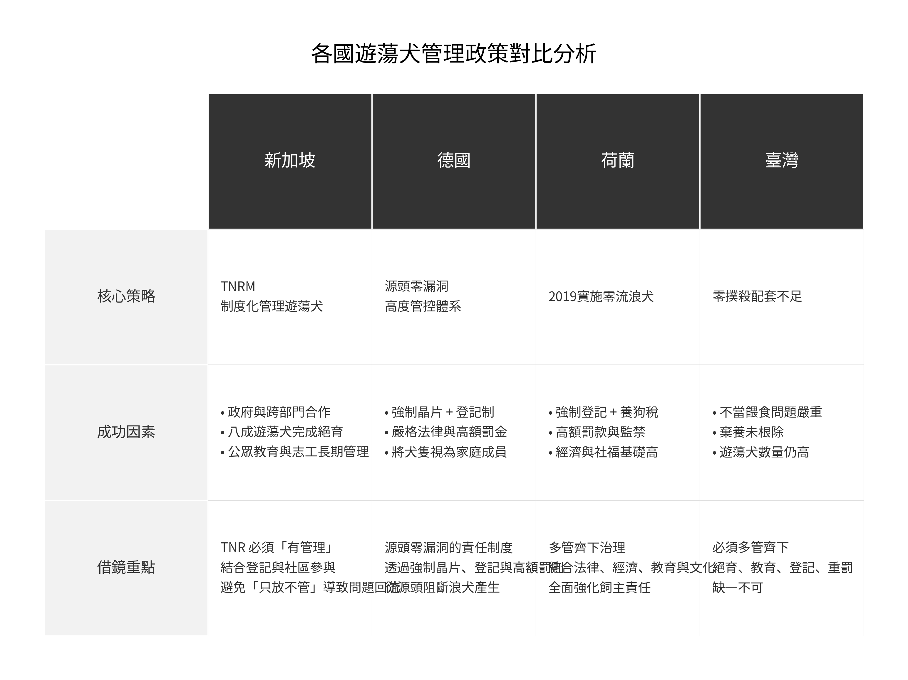

政策對比分析圖表

詳細政策解構
🇸🇬
新加坡
TNRM 制度化管理
核心策略
- TNRM 制度化管理遊蕩犬，將絕育與後續監測納入官方流程。
成功因素
- 政府與民間組織深度跨部門合作。
- 達成八成以上遊蕩犬絕育率之門檻。
- 強調公眾教育與社區志工的長期管理。
🇩🇪
德國
源頭零漏洞管控
核心策略
- 源頭零漏洞的責任制度，建立極高門檻的飼主准入機制。
成功因素
- 強制性晶片植入與全國統一登記制。
- 嚴格的動物保護法規與高額違規罰金。
- 社會文化將犬隻視為具法律地位的家庭成員。
🇳🇱
荷蘭
2019 達成零流浪犬
核心策略
- 多管齊下治理，結合法律約束、經濟槓桿、教育推廣與文化形塑。
成功因素
- 實施強制登記與差異化養狗稅（鼓勵收容代替購買）。
- 對虐待或棄養行為處以高額罰款甚至監禁。
- 國家具備高度經濟與社會福利基礎支撐。
🇹🇼
臺灣
零撲殺政策挑戰
核心策略
- 目前處於「零撲殺」轉型期，配套措施（如絕育速度、源頭管控）仍待加強。
當前挑戰
- 非科學化的不當餵食行為導致族群擴張。
- 棄養行為未受有效根除，收容體系飽和。
- 遊蕩犬總數仍維持高位，人犬衝突頻發。